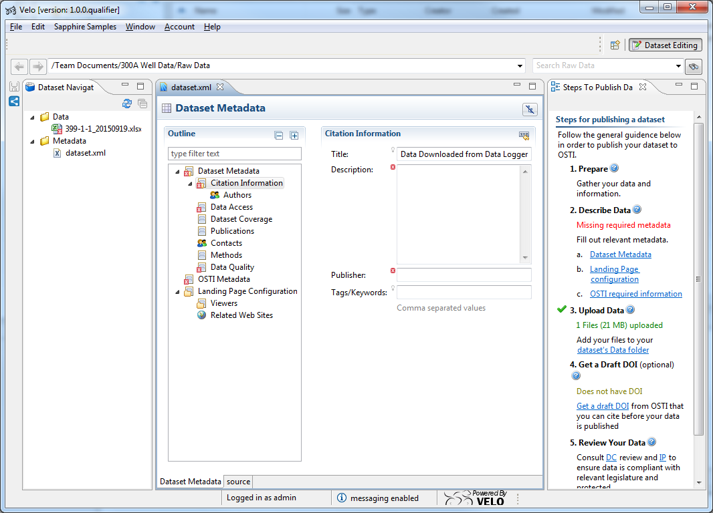

The Dataset Editing Perspective holds a central place in Velo for editing datasets. When the Dataset Editing Perspective is opened, it is by default organized into two main views (Figure 1):
The Dataset Navigator View allows the user to browse files and folders located on the Velo server by clicking on Browse and to select the  dataset to be edited.Once the dataset is selected, the Steps To Publish Dataset view displays the steps to follow in order to publish a dataset (figure 1).
dataset to be edited.Once the dataset is selected, the Steps To Publish Dataset view displays the steps to follow in order to publish a dataset (figure 1).
All the steps required to share a dataset are listed, and may come with a step-specific guidance. In the example provided in Figure 1, the first step is "Prepare"a and is followed by the  icon. By clicking on
icon. By clicking on  , a Help Window will pop up and provide the guidance specific to the selected step (Figure 1, [1]).
, a Help Window will pop up and provide the guidance specific to the selected step (Figure 1, [1]).
Other steps of the publishing process might require the user to click on links displayed in blue in the View. When a link is selected, a new window pops up and allows the user to pursue the process of publishing the dataset by filling out the required information (figure 1, [2]).

Figure 1. Dataset Editing Perspective Structure.
Note that a comprehensive description of the steps to publish a dataset are provided in the XXXX section. |